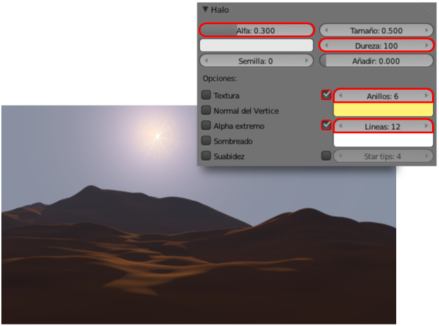

Halo y Destello
Mograph lensflare// Autor: Pkisme // Licencia: CC-BY-SA-3.0 (Creative Commons)
Se trata en realidad de una característica que se edita desde el panel de Materiales  .
.
Pero comencemos por concretar los términos:
- Halo. Gran resplandor que coincide con la fuente luminosa.
- Destello. Secuencia lineal de otras manchas luminosas que se extienden por la imagen. Tienen su origen en el halo y pasan por el centro de la imagen. Pueden extenderse a ambos lados del halo.
Los dos efectos están derivados del lenguaje fotográfico y es por eso que al añadirlos a una escena 3D suelen contribuir a que el espectador caiga en el engaño visual de que se trata de una instantánea tomada de la vida real.
Preparación del objeto para el halo
El objeto para el halo es una malla con un solo vértice. Sacamos a escena un plano (Añadir/Malla/Plano) y desde Modo Edición  eliminamos todos los vértices menos uno.
eliminamos todos los vértices menos uno.
El hecho de que el Origen y el único vértice no coincidan no es bueno aunque podrían quedar así. Lo mejor es, por lo tanto, conseguir la coincicencia pasando a Modo objeto  y usando Origen/Origen a geometría en el cuadro de Herramientas ("T"). Como la geometría es un único punto de la malla se consigue que el Origen se desplace y se produzca la coincidencia.
y usando Origen/Origen a geometría en el cuadro de Herramientas ("T"). Como la geometría es un único punto de la malla se consigue que el Origen se desplace y se produzca la coincidencia.
De esta manera tenemos mejor acceso a ese objeto que es algo peculiar al no tener una malla evidente.
Supongamos que tenemos el paisaje del desierto con la atmósfera realizado en una de las prácticas anteriores.
Preparamos el objeto para el halo tal y como hemos descrito arriba y después lo colocamos para que ocupe el lugar correcto desde el punto de vista de la cámara.

A ese objeto le asignamos un Material  pero, tras ponerle el nombre adecuado (halo) le cambiamos de tipo Superficie a Halo.
pero, tras ponerle el nombre adecuado (halo) le cambiamos de tipo Superficie a Halo.
Con esto aparece una nueva botonera de nombre Halo para editarlo. Si hacemos ahora un render no obtendríamos gran cosa, así que alteramos algunos parámetros:
- Alfa: 0.300. Para que se funda con el fondo y pierda algo de fuerza.
- Dureza: 100. Para que quede más nítido.
- Anillos: 6. Añade unos aros alrededor del halo. Nosotros hemos alterado el color para que sean amarillentos.
- Líneas: 12. El foco de luz emite unos rayos desde el origen. Aquí se determina el número.
Ahora nos vamos a la botonera de abajo, que se llama Destello y activamos la opción.
Para conseguir un efecto interesante debemos hacer un buen repertorio de pruebas. Nosotros nos quedamos con los siguientes parámetros:
- Subdestellos: 10. Número de motas luminosas que se generan.
- Semilla. Secuencia de motas (tamaño, color, distancia...). Hay una gran variedad. Nosotros nos hemos quedado con la 22.
Analiza y estudia el archivo .blend
Usa este .blend para compararlo con tu resultado una vez que hayas realizado toda la práctica. Te servirá de referencia para autoevaluarte.